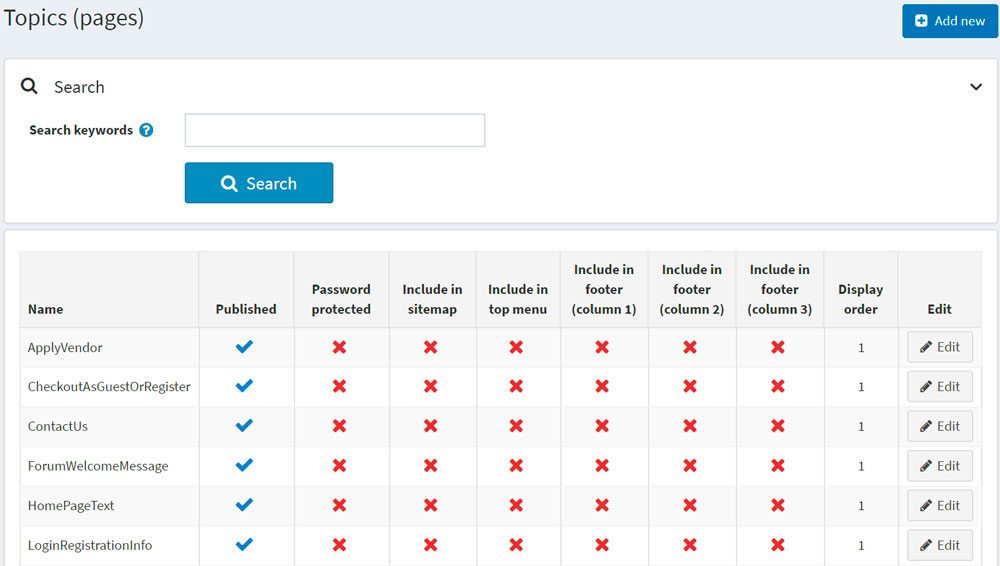

Topics (pages)
Topics (pages) are free-form content blocks that can be displayed on your site, either embedded within other pages or on a separate page. These are often used for FAQ pages, policy pages, special instructions, and more. To create a custom page, you should create a new topic and enter your custom page content on the topic details page. Content can be written for each language separately.
Topic list
To view the topics, go to Content management → Topics (pages). Search for topics in the topics list by entering the topic text or its fragment in the Search keywords field or among all the topics of a certain store.

Adding topics
To add a new topic, go to Content management → Topics (pages). Click Add new and fill in the information about the new topic.
Info
In the Info panel, define the following topic details:
- Enter the Title for the topic.
- Add the topic content using the editor provided in the Body field.
- The URL field is there for information only. It is the URL of the topic in the public store. You can edit this by editing the Search engine friendly page name field below.
Display
In the Display panel, define the following topic details:
Select the Published checkbox to make this topic published.
You can include this topic in the top menu, footer (column 1), footer (column 2), footer (column 3), and sitemap. Do this by selecting the corresponding checkbox.
Select the Password protected checkbox if this topic is password-protected. The Password field will be displayed on the topic page in the public store. A customer will need to enter the password to access the content of this topic.
From the Customer roles dropdown list, select a customer role or roles that can access this topic.
Note
In order to use this functionality, you have to disable the following setting: Configuration → Catalog settings → Ignore ACL rules (sitewide). Read more about the access control list here.
In the Limited to stores dropdown list, select stores in which the topic will be displayed.
Note
In order to use this functionality, you have to disable the following setting: Catalog settings → Ignore "limit per store" rules (sitewide). Read more about multi-store functionality here.
- Use the Accessible when store closed field to make this topic accessible when the store is closed.
- Select the topic's Display order. For example, 1 represents the first item in a list.
- Enter the System name of this topic.
Note
It is possible to use the same system name for different topics. For example, you can create two different topics with the same system name and make them accessible for different customer roles. For example, Guest and Registered customer roles. This means that guests and registered customers will see the different content on the site.
Note
While editing an existing topic or after clicking the Save and continue edit button for a new one, you can click the Preview button to see how the topic will appear on the site.
SEO
In the SEO panel, define the following topic details:
In the Search engine friendly page name field, enter the name of the page used by search engines. If you enter nothing, then the web page URL will be formed using the page name. If you enter custom-seo-page-name, then the following URL will be used:
http://www.yourStore.com/custom-seo-page-name.In the Meta title field, enter the required title. The title tag specifies the title of your web page. It is a code inserted into the header of your webpage, and it is in the following format:
<head> <title> Creating Title Tags for Search Engine Optimization & Web Usability <title> </head>Enter the required category Meta keywords, which represents a brief and concise list of the most important themes of your page. The meta keywords tag is in the following format:
<meta name="keywords" content="keywords, keyword, keyword phrase, etc.">In the Meta description field, enter a description of the category. The meta description tag is a brief and concise summary of your page's content. The meta description tag is in the following format:
<meta name="description" content="Brief description of the contents of your page.">
Click Save. The topic will be displayed in the public store.